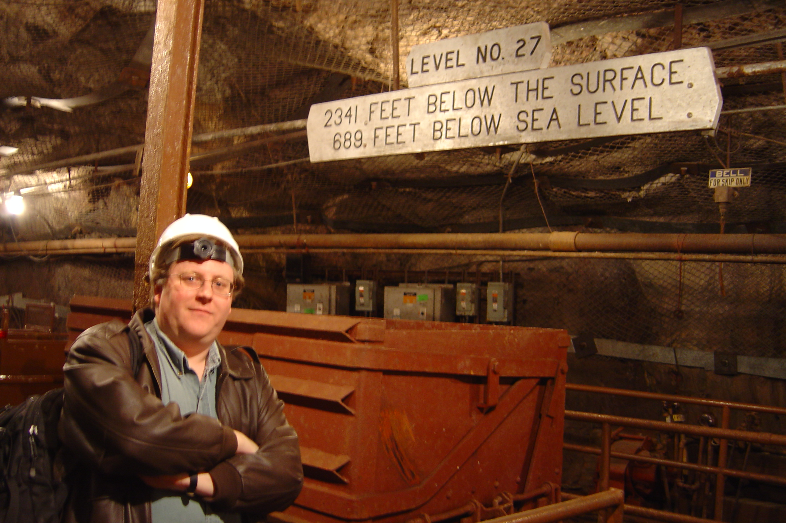

Dr. Nathaniel Tagg

A younger Dr. Tagg underground at the site of the MINOS Far Detector
About My Work
I study the neutrino - a subatomic particle with almost no mass, no charge, no magnetic moment, and which interacts only rarely. But neutrinos make up the same fraction of mass in the universe as stars and planets do, and exhibit bizarre behavior when traveling through space: they change form from one type of a neutrino to another. No other particle does this.
Detecting neutrinos is difficult, requiring the construction of large underground detectors, which I help build, run, and use to measure neutrino interactions and oscillations.
You can read more about my work at the Otterbein Neutrino Research Group site.